Dados, BI e automação · Goiana, PE · Remoto ou presencial
JOHN BARROS
Data & IA Analyst
Transformo operação em decisão.
Analista de dados e IA com base em Logística e Supply Chain. Construo sistemas, sites, automações e dashboards que cortam custo e retrabalho: um deles gerou R$ 190 mil de economia estimada em um ano, e outro tem potencial de até R$ 400 mil.
R$ 190 milde economia estimada em um ano no PMC Vision, mais potencial de até R$ 400 mil no Stop Zero
50+dashboards em Power BI entregues, para clientes multinacionais e para a própria empresa
8 áreasunificadas em um único sistema web (Compass)
130 milvisualizações no LinkedIn com o Digital Twin
DADOS • INSIGHTS • RESULTADOS
Projetos
Projetos com resultado em reais.
Cada um nasceu de um problema real de operação. Os ganhos são estimativas feitas por mim durante os projetos.
Power Apps · em desenvolvimento
Stop Zero
Aplicativo que registra em tempo real cada microparada de linha (motivo e área), padroniza a informação e alimenta um painel no Power BI. Os dados mostram gargalos e recorrências e orientam as ações corretivas.
Potencial de economia de até R$ 400 mil em um ano
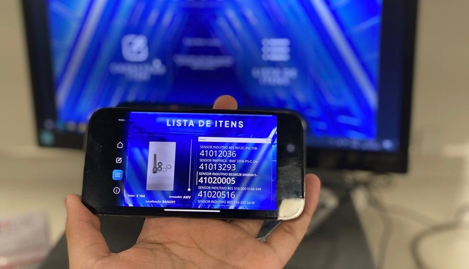
Power Apps · Indústria automotiva
PMC Vision
Catálogo digital do almoxarifado com descrição, código, imagem, valor e localização de cada item. Qualquer colaborador consulta sozinho, o que poupou cerca de 30 minutos por dia de fila para o almoxarife e a produção.
Kaizen que gerou R$ 190 mil em um ano
Power BI · Indústria automotiva
Stock 360
Dashboard 3D de estoque em Power BI, que une design interativo e análise de dados em tempo real para uma nova visão da gestão de estoques.
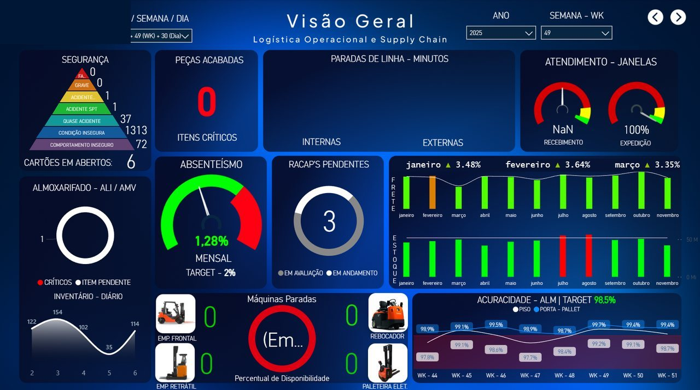
Power BI · Indústria automotiva
Supply Chain Operacional
Painel único, usado todo dia pela equipe, que acompanha o processo do recebimento à expedição: tempo de descarregamento, itens críticos, paradas por motivo logístico, target de frete, tempo de doca e contagens cíclicas.
Sistemas
Os sistemas que eu desenho e coloco para rodar.
Frentes de trabalho em dados, operação e sistemas sob medida. As telas abaixo são ilustrações da estrutura de cada sistema, sem dados nem marcas de clientes.
sistema-interno / visão geral
Visão geral
RH
Financeiro
Mobilizações
Treinamentos
Jurídico
Almoxarifado
Frota
Chamados
Pessoas248
Vencem 30d12
Chamados37
Frota96%
Treinamento NR-35em dia
Documento de acessovence em 12d
Chamado #1042atrasado
ERP interno · sou o dono do sistema
Compass
Sou o dono do Compass, o ERP interno da empresa: eu desenho, construo, mantenho e treino as equipes que o usam. A diretoria perguntou se dava para ver a empresa inteira numa tela só. O Power BI não resolvia (não abre no Mac e quebra quando alguém muda uma coluna), então construí um sistema web que reúne oito áreas e se atualiza sozinho.
RH, Financeiro, Mobilizações, Treinamentos, Jurídico, Almoxarifado, Frota e Chamados
Acesso por setor e QR Code para rastrear item no almoxarifado e no arquivo físico
Painel da frota: combustível, revisão, lavagem e quem está com o carro
Feito em Python (FastAPI), com domínio próprio, backup automatizado e 50 testes automatizados
Painéis para a diretoria girando nos monitores do escritório
Abre no navegador, sem instalar nada e sem manutenção manual
digital-twin / armazém ao vivo
giro normalatençãocríticobipagem
React · Three.js · IA
Digital Twin de Armazém
Uma réplica 3D do armazém em que a operação alimenta o próprio sistema, sem planilha e sem atualização manual. Feito em 2 dias como projeto pessoal, com dados simulados e a lógica de um WMS real. Inclui também uma simulação 3D de expedição, com caminhão, doca e empilhadeira ligados a números reais.
Bipagem, estoque e giro em tempo real
Mapa de calor por posição
IA que propõe e executa otimizações
Mais de 130 mil visualizações no LinkedIn em uma única publicação
power-bi / operação e qualidade
OTIF94%
Lead time2,1d
Acidentes0
Retrabalho−38%
Power BI · Power Apps · SharePoint
Dashboards e aplicativos de operação
Painéis para quem decide e aplicativos para quem opera. Ligam a rotina do chão ao número da gestão, sem retrabalho.
Mais de 50 dashboards em Power BI entregues, que se atualizam sozinhos, sem ninguém baixar relatório
PMC Vision, com R$ 190 mil de economia estimada por ano, e Stop Zero, com potencial de até R$ 400 mil
Stock 360 e painel de Supply Chain, do recebimento à expedição
gestão / funil de vendas
Novo lead
Cliente AInteresse: moto elétrica
Cliente BTroca + financiamento
Proposta
Cliente CSimulação enviada
Negociação
Cliente DAguardando entrada
Cliente EVisita marcada
Vendido
Cliente FEntrega agendada
Web · vitrine + gestão · IA
Vitrine e gestão para revenda de veículos
Uma loja online para o cliente e um painel para a equipe, no mesmo sistema. Estoque, funil de vendas e atendimento ficam em um só lugar, com IA ajudando na proposta.
Vitrine pública com catálogo e fechamento por WhatsApp
Painel com estoque, clientes, funil e vendedores
IA que ajuda a montar a proposta e responder o cliente
Também construo sob medida para pequenos e médios negócios.
Sites, sistemas e automações para quem precisa vender, atender e se organizar melhor. Os clientes não são citados aqui.
Next.js · Banco de dados · IA
Plataforma para fotógrafos
Portfólio público, galerias privadas por evento, busca de fotos por reconhecimento facial, venda com download liberado após o pagamento e painel de administração. Pensada para vários fotógrafos usarem a mesma base.
Web · Português e espanhol
Catálogo e painel para loja de eletrônicos
Vitrine com carrinho e fechamento por WhatsApp, em dois idiomas e com preço em moeda local, mais um painel da equipe com estoque, custo, lucro, vendas e vendedores.
React · Protótipo
Plataforma de ponto e RH
Controle de ponto e gestão de pessoas para centenas de funcionários, com visual moderno e identidade visual do cliente aplicada. Entregue como protótipo navegável, com o back-end real como próximo passo.
Web · Gestão
Painel de gestão do negócio
Clientes, funil de vendas, projetos, cobranças, financeiro, metas e projeções em uma só tela, para o dono ver o negócio inteiro sem abrir várias planilhas.
IA · Atendimento
Agente de IA no atendimento
Assistente treinado com os dados da loja: monta proposta, compara economia de uma moto elétrica com o gasto de gasolina e responde o cliente em linguagem simples.
Remotion · Vídeo por código
Vídeos institucionais e cases
Vídeos animados feitos com código, usados para apresentar soluções e mostrar resultado de projetos de forma rápida e visual.
Dashboards
Dashboards e sistemas de verdade.
Painéis e sistemas que construí para áreas diferentes: qualidade, produção, logística, RH e financeiro. A ideia: olhar para a operação e ver o dashboard atualizar sozinho, sem ninguém baixar relatório. Marcas e nomes de clientes foram ocultados, e as telas do Compass usam dados fictícios. Clique para ampliar.
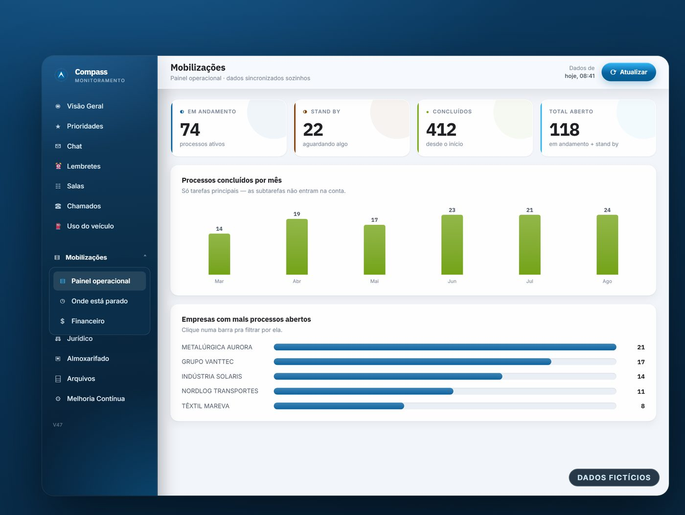
Compass: painel de mobilizações (dados fictícios)
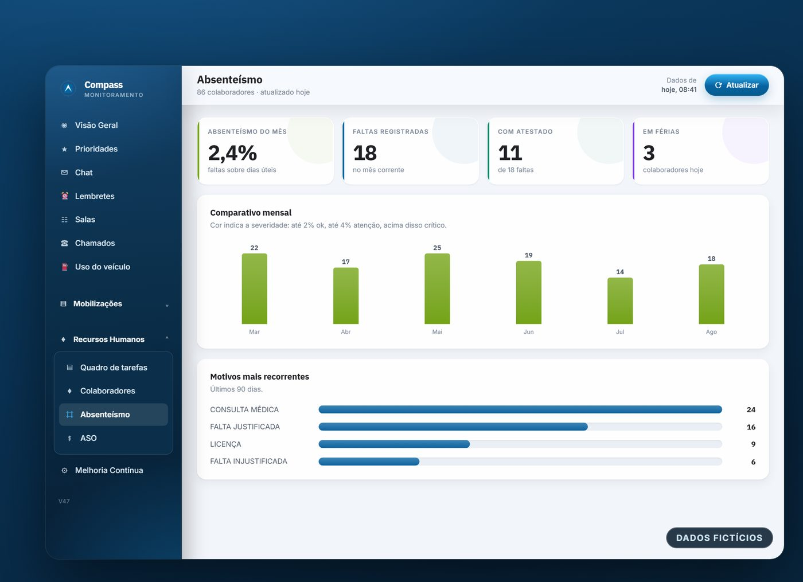
Compass: RH e absenteísmo (dados fictícios)
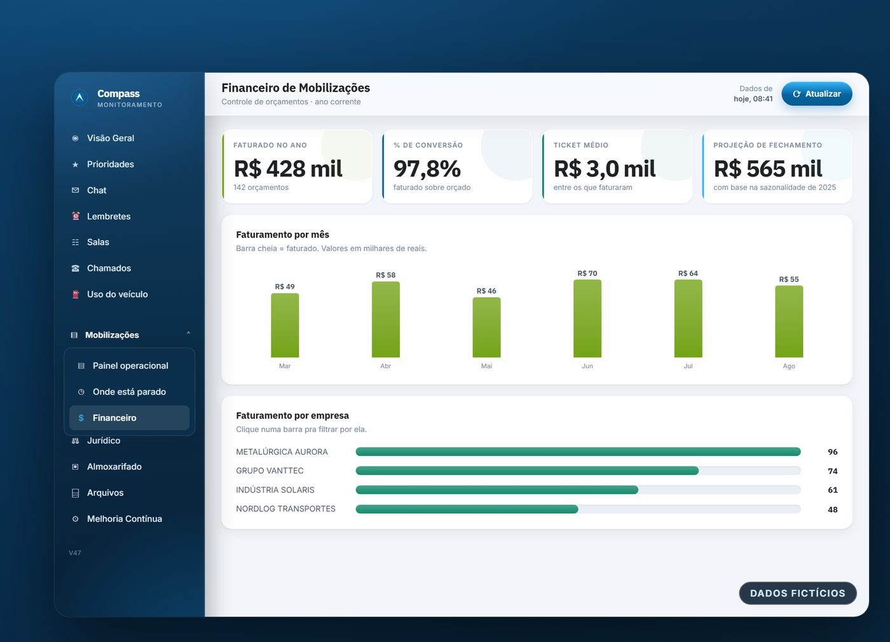
Compass: financeiro de mobilizações (dados fictícios)
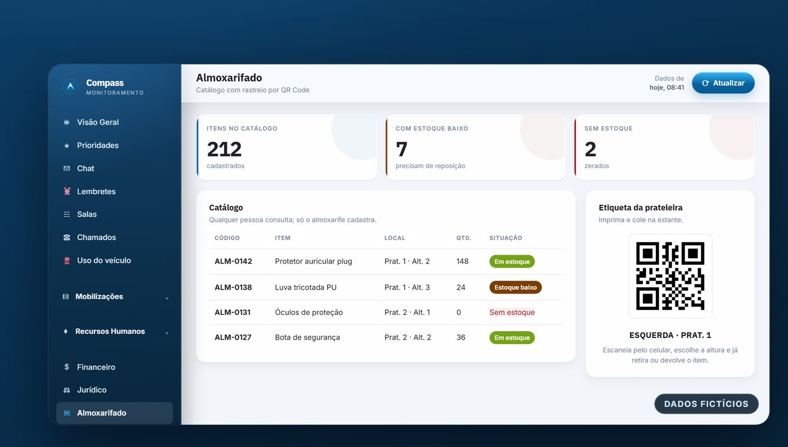
Compass: almoxarifado com QR Code (dados fictícios)
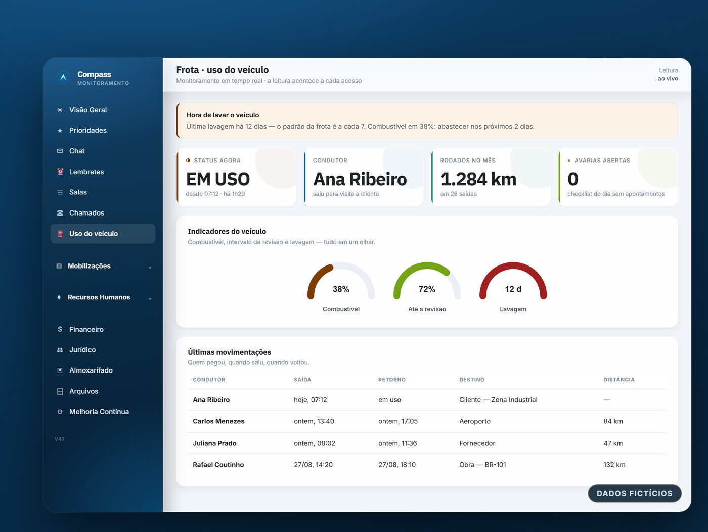
Compass: frota e uso do veículo (dados fictícios)
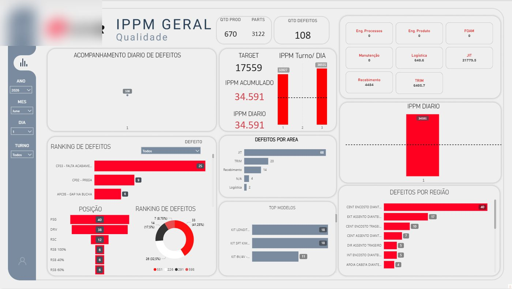
Qualidade: IPPM geral, defeitos por área e ranking
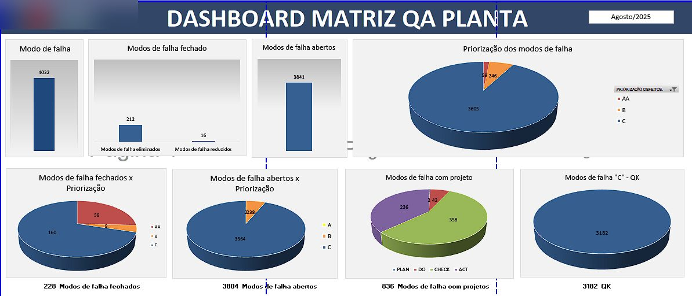
Qualidade: dashboard Matriz QA da planta
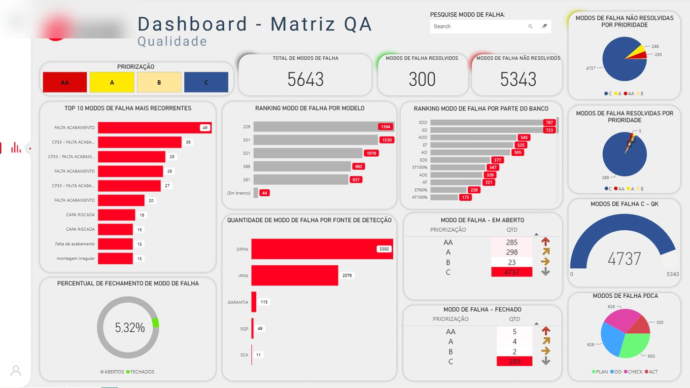
Qualidade: Matriz QA, modos de falha e prioridades
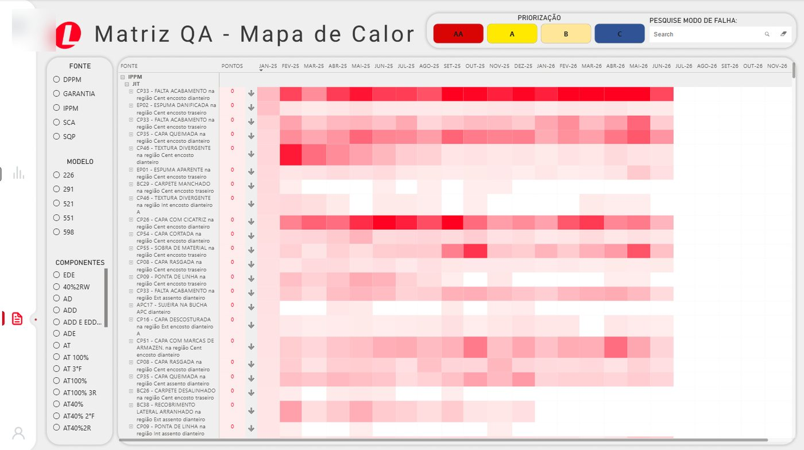
Qualidade: mapa de calor de falhas
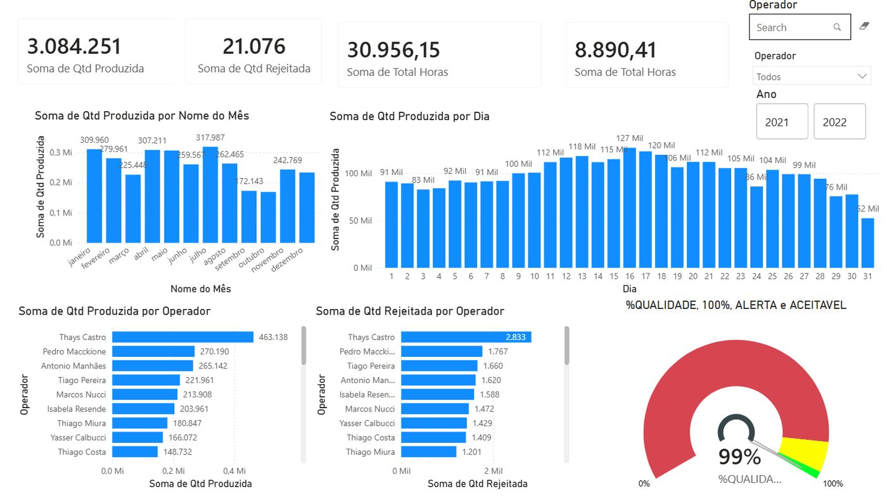
Produção: peças, horas e qualidade por operadorLogística: estoque em 3D (Stock 360)Logística: visão geral de Supply Chain
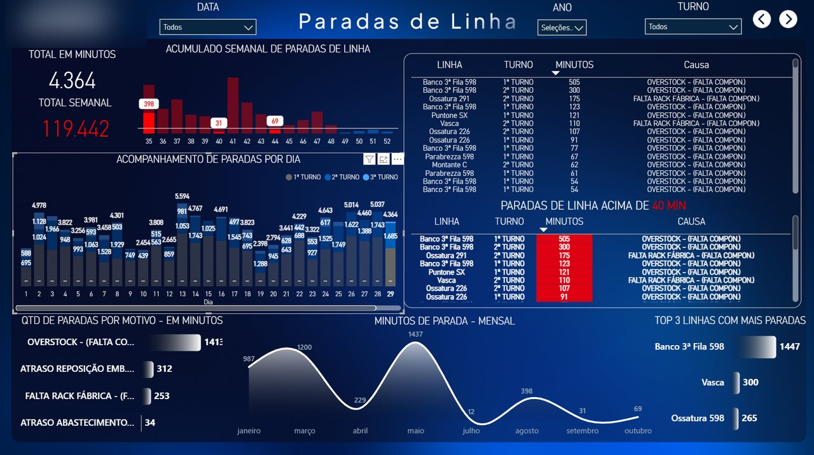
Operação: paradas de linha, causas e top linhas
Alcance
O que eu publico chega longe.
Mostro meus projetos e dashboards no LinkedIn, muitas vezes em vídeo, com dados simulados. Estes são os números reais de cada publicação.
“Que honra é acompanhar o desenvolvimento de talentos tão promissores!”
Analista de Logística com mais de 10 anos em Supply Chain, na indústria automotiva onde fui aprendiz
Sobre mim
Da logística para os dados.
Comecei no chão da operação: recebimento, estoque e expedição em ERPs como DATASUL e TOTVS. Foi ali que aprendi onde a informação se perde e onde um bom indicador faz diferença.
Hoje cuido de sistemas, dados e processos: sou o dono de um ERP interno, desenho dashboards, automações e sites, e treino as equipes que usam o que eu construo. Transformo necessidade de negócio em dashboard, aplicativo ou automação, com Power BI, Power Platform, Python e IA generativa.
Moro em Goiana (PE), estou cursando Ciência de Dados e tenho o hábito de aprender fazendo. Falo espanhol avançado, inglês intermediário e italiano básico.
Dados & BI
Power BIDAXPower QueryModelagemETLExcel avançado
Automação & Sistemas
Power AppsSharePointPython (FastAPI)ReactThree.jsHTML · CSS · JSIA generativa
Sistemas, dados e processos · Empresa de soluções empresariais
Criei o Compass e entreguei dashboards para um cliente multinacional. Sou dono do Compass, o ERP interno. Também sou o responsável por controlar os acessos das empresas clientes às dependências de uma montadora: acompanho o vencimento dos documentos e garanto que nenhuma empresa fique bloqueada. Providencio os treinamentos.
Entrada em uma empresa de soluções empresariais
Início como Analista Administrativo Pleno, com foco em BI e automação.
Formação em logística e supply chain
Técnico (SENAI), tecnólogo (UNIMAR), pós-graduação em Logística e Gestão da Produção e dois MBAs: Supply Chain Management e Gestão de Tecnologia em Logística.
Aprendiz em Logística · Indústria automotiva
Operação do recebimento à expedição. Foi onde nasceram o PMC Vision, o Stock 360, o painel de Supply Chain e o Stop Zero, ainda em desenvolvimento.
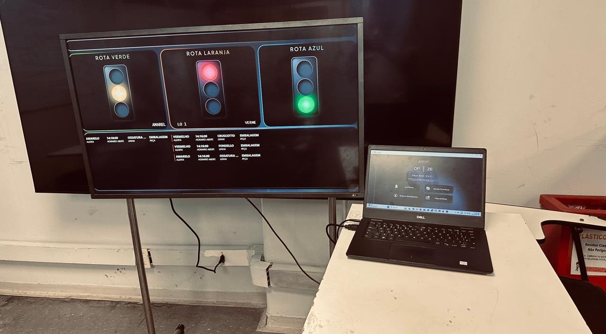
Formação
Graduação, pós e certificações.
Graduação · em andamento
Ciência de Dados
UNIFECAF · previsão de conclusão em ago. 2028. Graduação com foco em Machine Learning e Inteligência Artificial.
MBA · concluído em mar. 2026
Gestão de Tecnologia em Logística
Tecnologia aplicada à operação logística.
MBA · concluído em fev. 2026
Supply Chain Management
Gestão da cadeia de suprimentos de ponta a ponta.
Pós-graduação · concluída em fev. 2026
Logística e Gestão da Produção
Lato sensu.
Graduação · concluída em dez. 2025
Superior de Tecnologia em Logística
UNIMAR.
Técnico · concluído em set. 2025
Técnico em Logística
SENAI.
Certificações
Microsoft Office SpecialistExcel AvançadoPower BI AvançadoAnálise de Dados no Power BIAdministração de Banco de DadosLean Six Sigma Yellow Belt
O que eu entrego
O que eu sei fazer.
Gosto de resolver problema de verdade. Entrego o que tira retrabalho, dá clareza e libera o tempo da equipe.
01
Sistemas sob medida
ERP, CRM e sistemas completos, desenhados do jeito que a sua empresa trabalha. Do cadastro ao relatório, tudo em um só lugar, com acesso por equipe.
02
Dashboards que as pessoas usam
Painéis claros que se atualizam sozinhos: o funcionário deixa de depender de baixar relatório, e quem decide vê o número certo na hora.
03
Sites e lojas online
Sites bonitos e rápidos, vitrines com catálogo e pedido por WhatsApp, prontos para vender e para aparecer bem no celular.
04
Automações e e-mails automáticos
Avisos, cobranças, relatórios e mensagens que se enviam sozinhos. O trabalho repetitivo sai da sua rotina.
05
Aplicativos para a operação
Apps simples para registrar o que acontece no dia a dia e trocar papel e planilha por informação confiável.
06
Inteligência artificial no dia a dia
IA aplicada a processos reais: atender, montar propostas, analisar dados e sugerir o que fazer.
07
Melhoria contínua
Olho de logística e Supply Chain para achar o gargalo antes de montar a solução.
08
Controle de acessos e prazos
Gestão dos acessos de empresas terceiras a uma montadora, com controle de vencimento de documentos para que nenhuma fique bloqueada.
Contato
Tem um problema de dados ou processo? Vamos conversar.
Quer conversar sobre dados, BI, Power Platform ou melhoria contínua? Atendo remoto ou presencial em Recife, João Pessoa e região, e posso viajar.
Microparadas de linha duram segundos ou minutos, mas somadas geram grandes perdas de produtividade e derrubam o OEE. O Stop Zero nasceu para enxergar e eliminar essas paradas.
Como funciona
Registro em tempo real: operadores ou supervisores informam o motivo e a área da parada.
Informação padronizada: campos de escolha evitam texto livre e deixam os dados comparáveis.
Dashboard no Power BI: os registros alimentam um banco analisável, com tendências, gargalos e recorrências.
Ação corretiva: os dados mostram onde atacar primeiro.
Por que importa
Aumenta a disponibilidade operacional e a previsibilidade
Integra manutenção, logística e produção em torno dos mesmos dados
Orienta os investimentos para onde há mais impacto
Cria cultura de melhoria contínua
Status: ainda em desenvolvimento. Potencial de economia de até R$ 400 mil em um ano.
Power Apps · mobile e desktop
PMC Vision
Sistema de gestão de materiais que centraliza descrição, código, imagem, valor e localização de cada item do almoxarifado.
O problema
Todo dia se formava fila de cerca de 30 minutos para consultar o saldo de EPI, e requisições erravam porque o colaborador pedia o item sem saber o nome ou o código.
O que mudou
Qualquer colaborador consulta o item sozinho, sem depender do almoxarife
Cerca de 30 minutos produtivos ganhos por dia para o almoxarife e a produção
Menos solicitações manuais e menos erro de requisição
Reposição mais ágil e mais controle dos recursos
Economia estimada de R$ 190 mil em um ano.
Power BI · dashboard 3D
Stock 360
Dashboard 3D de estoque feito inteiro em Power BI. Une design interativo e análise de dados em tempo real para uma nova visão da gestão de estoques.
O que o painel mostra
Total de peças e valor em estoque
Localizações preenchidas e vazias, com o percentual de saturação
Status dos itens: OK, Overstock e Crítico
Mapa 3D interativo das ruas do estoque, com indicadores de ocupação
Como ajuda no dia a dia
Dá para buscar um item pela caixa de pesquisa ou clicar nele e localizá-lo no ambiente 3D. Isso agiliza inventários anuais e cíclicos, a conferência e a contagem.
Um painel único, usado todos os dias pela equipe, que acompanha a cadeia de suprimentos do recebimento à expedição, com dados em tempo real.
O que ele monitora
Tempo de descarregamento e desempenho do recebimento
Itens críticos e paradas de linha por motivo logístico
Target de frete e níveis de estoque
Controle de absenteísmo
Tempo de doca para expedição e eficiência do fluxo de saída
Contagens cíclicas do almoxarifado e itens críticos por área
Reúne os indicadores de toda a cadeia em uma visão completa da operação, para apoiar as decisões do dia a dia.
Power BI · Power Apps · SharePoint
Dashboards e aplicativos de operação
Painéis para quem decide e aplicativos para quem opera, ligando a rotina do chão ao número da gestão.
Mais de 50 dashboards em Power BI entregues, incluindo mais de 15 para um cliente multinacional (EHS&S e Qualidade), em ciclos de um mês por área
Dashboards e KPIs para RH, Financeiro, Mobilização e Treinamentos
Painéis de indicadores para a diretoria, em exibição contínua nos monitores do escritório
Dashboards automatizados por QR Code e formulários, que acabaram com planilhas manuais
Aplicativos em Power Apps: PMC Vision (R$ 190 mil estimados em um ano) e Stop Zero (em desenvolvimento, com potencial de até R$ 400 mil)
ERP interno · Python (FastAPI)
Compass
A diretoria perguntou: dá para ver a empresa inteira numa tela só? Cada área já controlava bem o seu, mas consolidar tudo era trabalho manual, toda semana. O Power BI não resolvia: não abre no Mac e quebra quando alguém renomeia uma coluna ou move um arquivo. Então construí um sistema web.
Uma réplica 3D de um armazém em que a operação alimenta o próprio sistema, sem planilha e sem atualização manual. Feito em 2 dias, como projeto pessoal, com dados simulados e a lógica de um WMS real.
O que dá para ver
Bipagem de entrada e saída em tempo real, com estoque, valor financeiro e giro de cada produto recalculados na hora
A produção pede uma peça: o sistema localiza no armazém e a câmera acompanha até a entrega
Uma IA que analisa ocupação, giro e valor imobilizado, propõe um plano de otimização e executa a movimentação
Mapa de calor com os itens críticos, em atenção ou em overstock
Expedição em 3D
Uma segunda simulação mostra o caminhão chegando, manobrando e entrando na doca, e a empilhadeira carregando pallet por pallet. Tudo conectado a números reais: progresso, tempo de espera e prazo.